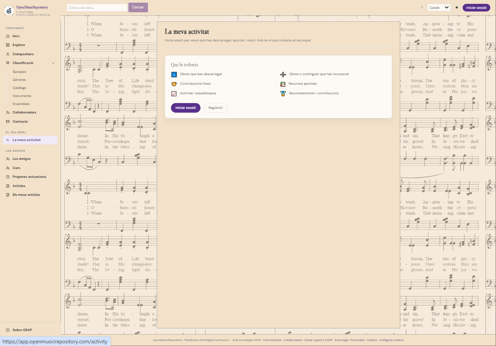

Guia d’ús
Compte, accés i activitat personal
Aprèn a iniciar sessió, crear un compte, gestionar el nom visible i consultar l’historial personal disponible.
1. Consultar sense iniciar sessió
Moltes pàgines del catàleg es poden explorar sense compte. Algunes accions, com consultar la teva activitat personal o utilitzar funcions reservades a usuaris identificats, requereixen iniciar sessió.
2. Crear un compte i iniciar sessió
Utiliza el botón Iniciar sessió de la capçalera. OSAP intenta obrir el procés d’autenticació configurat; si no ho aconsegueix, pot mostrar un formulari alternatiu per iniciar sessió o registrar-te. Segueix les instruccions de la pantalla i utilitza una adreça electrònica a la qual tinguis accés.
Si no pots accedir-hi, comprova que has introduït les dades correctes i que el servei d’autenticació està disponible. No comparteixis les credencials amb l’equip de suport.
3. Nom del compte i tancament de sessió
Quan has iniciat sessió, la capçalera mostra el nom o el correu associat al compte. En prémer aquest control, l’aplicació permet editar el nom si el servei ho admet. El nom del compte i l’autorització per aparèixer públicament com a col·laborador no són necessàriament el mateix.
Usa Tancar sessió quan hagis acabat en un dispositiu compartit. L’aplicació també preveu tancar la sessió automàticament després d’un període prolongat d’inactivitat.
4. La meva activitat

En el menú La meva activitat pots consultar la informació personal que el sistema hagi registrat, com ara:
- Descàrregues i consum de quota.
- Etapa d’accés i saldo restant, si escau.
- Aportacions i estat de revisió.
- Obres, representacions, recursos o fitxers associats a les aportacions materialitzades.
La pantalla pot estar buida si encara no hi ha activitat registrada o si una operació no s’ha completat. Una sol·licitud pendent no equival a una aportació acceptada.
5. Idioma i aparença
La capçalera inclou un selector d’idioma i un control de tema clar/fosc. L’idioma afecta els textos traduïts de la interfície. Els títols de les obres, els noms propis, les dades dels proveïdors i part del contingut extern poden mantenir-se en la llengua original.
6. Quotes i accés a les descàrregues
L’accés a les descàrregues pot dependre de l’etapa d’accés del compte, dels límits diaris i de les regles vigents. Si arribes a un límit, consulta el missatge de l’aplicació. Les condicions poden variar i les eines administratives de quotes no estan disponibles per als usuaris ordinaris.
També pots consultar el avís de privadesa y la política de galetes.